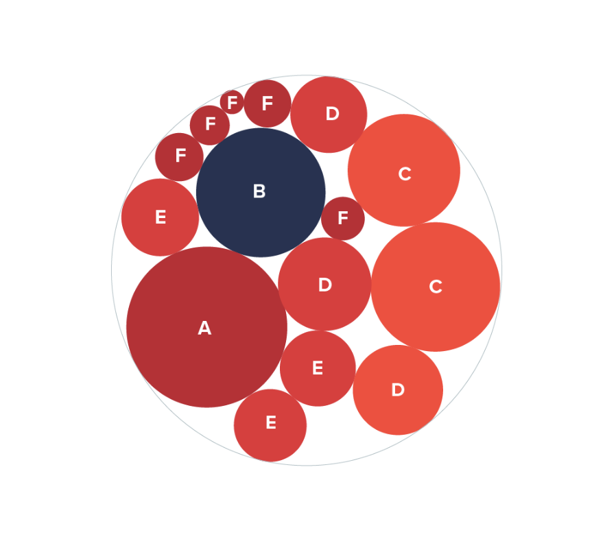
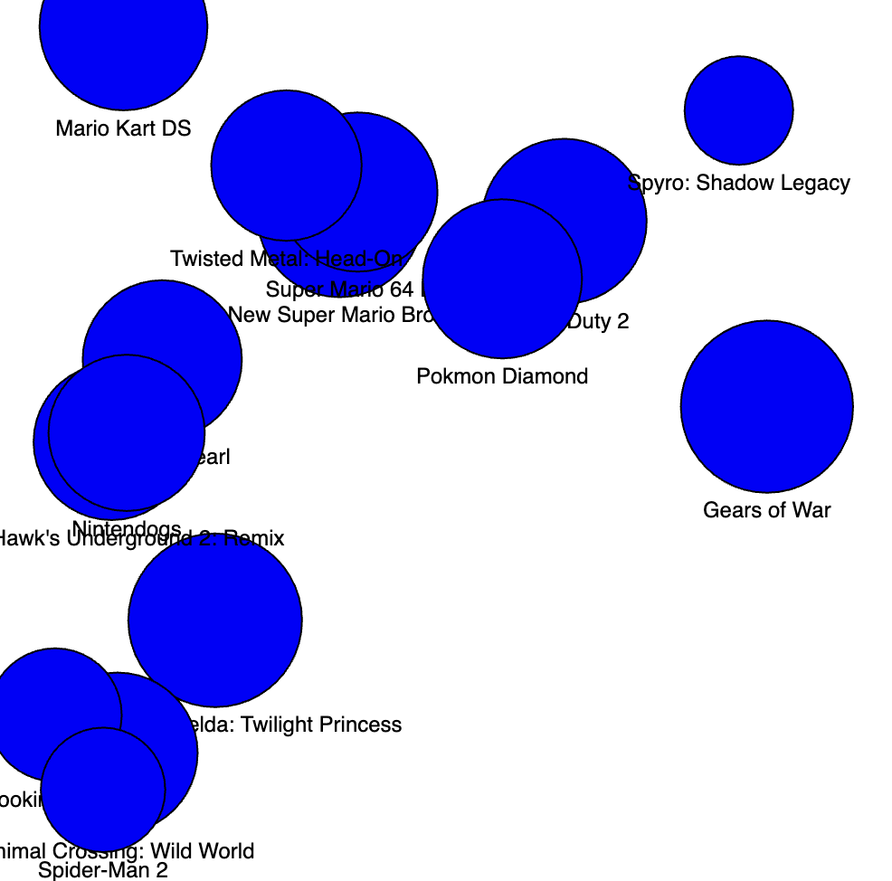
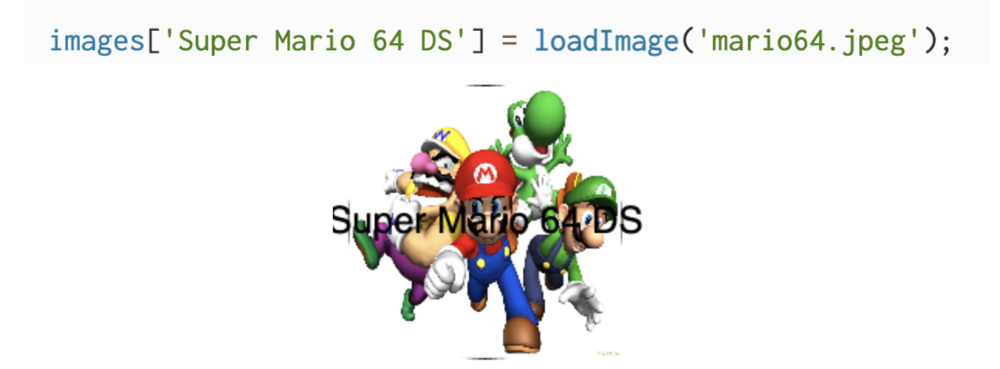
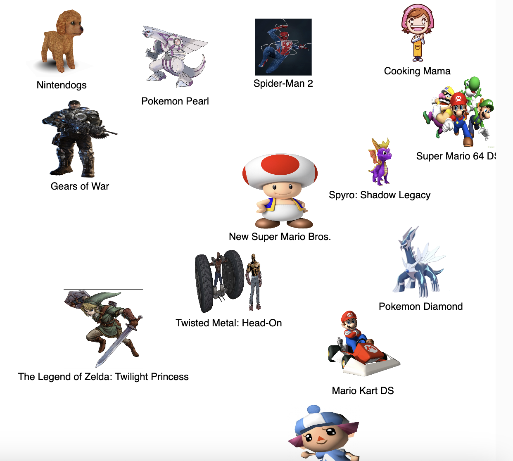

Experiment 7 - Data Visualization and Networks
Imitate
This experiment took a bit for me to figure out what I wanted to do. I didn’t really know what data I wanted to visualize. After a while I decided to visualize data that I know best. I wanted to represent a list of video game ratings. To do this I decided to use a packed circle chart to represent the data.
As for the data I found “Video Game CSV File” from the CORGIS Dataset Project. From this list of 2000 games I dwindled it down to a list of 13 games to look at for displaying game review data. Instead of using regular circles I wanted to use characters from each video game and enlarge them or shrink them depending on the game's review out of 100.
Integrate
For starters I needed to figure out how to get a csv file to load on the p5.js library. Luckily the p5.js reference page had pretty simple instructions to follow. With my data uploaded I need to now cycle through the rows and columns to collect the data. Since I wanted to be sorting through the game reviews to find the high scores vs the lowest scores. I figured the best approach would be to create a function that would process this data.
With the data sorting completed I wanted to mimic the packed circle chart. I was able to get this semi working. The circles were not placed where I wanted them to be and same with the game titles. Currently everything is overlapping and it is unclear which game title goes with which circle.
With a bit of experimenting I was able to get it so the circles had an offset from each other and center the game titles on the circles. From this point it was time to clean up the look and replace these circles with characters from each of these games instead.
Innovate
The first step I wanted to complete was swapping the circles out for characters from each game. I looked up a few different ways to see if I could incorporate this data into the CSV file. The most popular way I found was to create a column that would hold links to all the images. I would be able to retrieve the data from these links to display the image. However, this did not end up working. There was difficulty getting the p5.js library to use the image url to populate an image. The next approach was to still use the CSV file, but instead label each image in the column with the path file to each image. This involved an extra step of downloading each image and uploading it to the p5.js web editor. This initially looked like it was working but since not every image was a jpg, this caused an issue with non jpg images being displayed. In my third attempt I came up with the solution of when a certain game title data is uploaded it would then be loaded in an image that would be connected to that game title.
I just had to do these for all 13 games then I can move on and adjust the color of the text so it would be more visible. After I got all the images uploaded and loaded, the issue I saw very quickly was that sometimes the images would get placed too close to the canvas edge and cut off the image. You can see that Animal Crossing got cut off on the bottom edge.
I was able to successfully do this but I have a new problem now. There is the issue of the text overlapping each other and the text is no longer centered on the image. After some messing around I look like I need to keep images with a circular background so the text can be based on that location. Next I need to get the text to stop overlapping with each other. As this was causing another cut off issue. I was able to get this pretty dialed in. With that completed I added a background image. With this I just needed to add in some touchup so the display was nicer. After a bit of reading in the p5.js library I was able to see what I could mess around with the text. I changed the fill and bolded the text.
Reflection
I completed this experiment independently. This was the hardest experiment for me to figure out as I was not sure of where to even start. All I knew was I wanted to plot some sort of data with information from a CSV file. In the end I decided to plot video game review data through the use of a packed circle chart. Once I had the CSV file edited it was pretty easy to create the data and visualize it. It was just to create 3 different layers. One would be the circle, this would change sizes depending on the game review score, the image, which would change size with the circle, then the text which would say the title of the game that was reviewed.